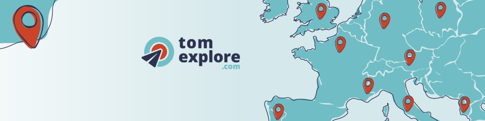

Entreprise
TomExplore — Concevoir l'expérience de planification de voyage
Comment simplifier la planification de voyage pour des utilisateurs pressés ? Recherche utilisateur, prototypage itératif et design d'interaction haptique pour créer une expérience mobile intuitive.
Voir l'étude de cas →